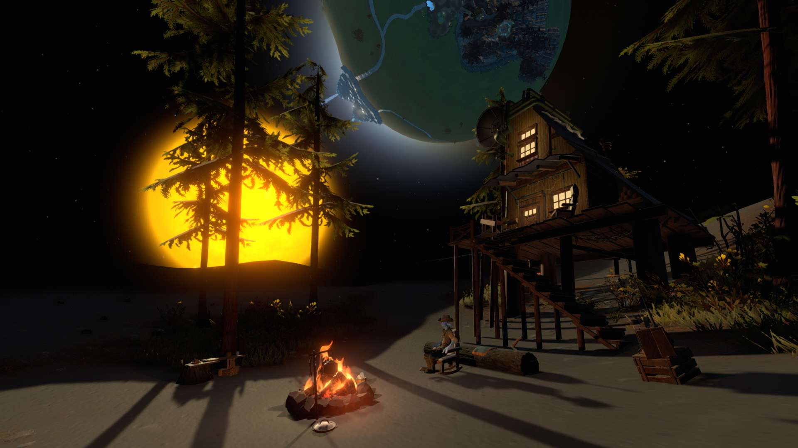
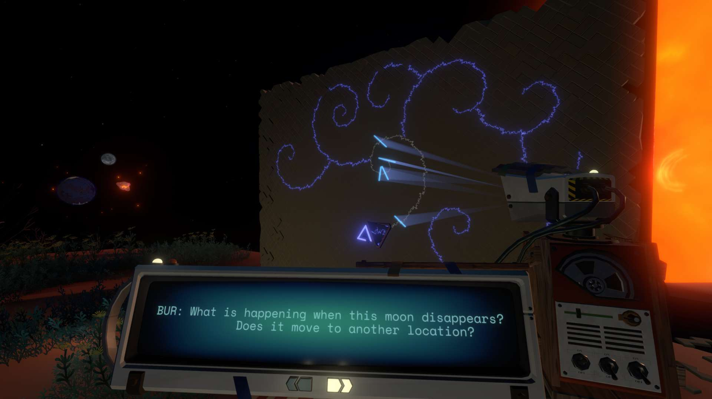
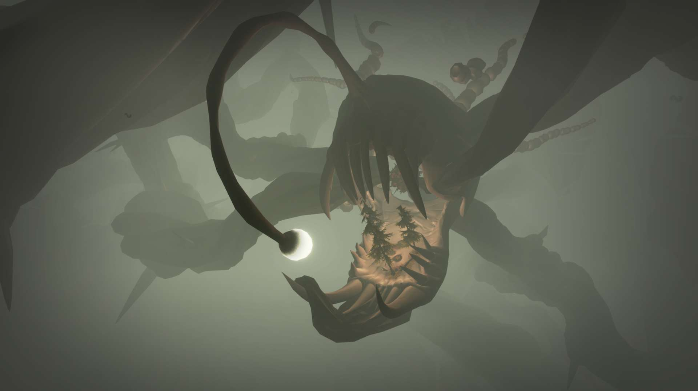
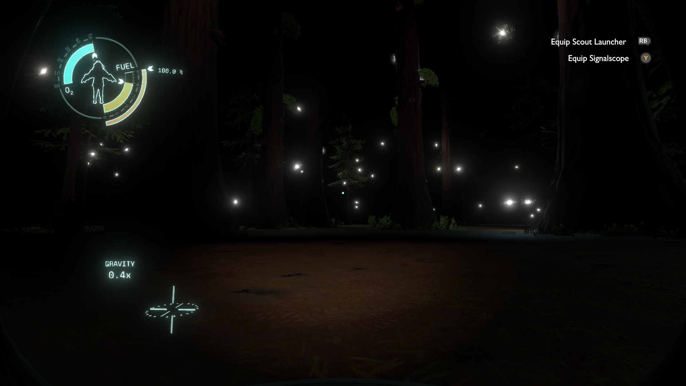

Strange Gaming Diaries: Outer Wilds, by Mobius Digital
this one's another all-spoilers post, and although I normally let this point go unspoken, I'm going to lay it out for you this time: please don't read this until you've played the game. don't do it. this is because outer wilds is a very special kind of game where learning about the game is the primary gameplay loop. if you learn about the game here from me, any future experience you might have playing the game will be irrevocably shattered forever and I'm not even exaggerating a little bit. okay. thank you.

I'm writing this post the night after having finished this game. I find myself compelled to look out of my window and gaze up at the sky in brooding contemplation as I type that sentence, but I know the giant tree right outside my window and the cloudy oregonian skies will render that futile. not that any of those are things that would render the act pointlessly foiled, but they would in my case, because my compulsion is one driven by a desire to see the stars.
then I typed sorry about the tangent, then I backspaced that with a patient acknowledgment to myself that no, this is actually something of narrative significance here. the nighttime sky has always been a comforting sight for me, someone who spent a lot of time taking inadvisably late walks down empty suburban streets that anybody else would've called horribly unnerving but that I just sort of didn't mind.
on an immediate and aesthetic level, outer wilds is a game that I know understands why people like me enjoy looking up at the night sky. sure, there's the wonder and mystery of what and where each of those bright little dots might be, that's at the core of basically everything that concerns itself with exploring outer space, but outer wilds understands that space is about the beauty of orbits, the meditative contemplation brought about by lone journeys through darkness, and the sheer awe that such marvelous little things have managed to form in this universe at all. every star isn't just a destination, it's a ceaseless chemical engine that constantly churns and spews out energy. every planet isn't just a rock in space, it's a little spheroid that took an unfathomable amount of time to coalesce, and often carries unique traits that immediately tell you the story of how it came about.
each of the game's planets, as a means of enhancing this wonderful quality of space, introduce some kind of fantastical element that gives them a striking aesthetic that had me utterly captivated during my first few hours of the game. the sand transference of the hourglass twins is mesmerizing, the cyclone-strewn seas of giant's deep are gorgeous in their thrashing chaos, and good fucking lord the dark bramble is some of the most tense and horrified I've felt in a video game.
playing through the game and exploring all the nooks and crannies of these planets got me emotionally invested in the universe itself, establishing relationships and rivalries with different planets as they threw different challenges at me. every time I saw the quantum moon while I was out and about (and after learning what it even is) I always greeted it with a half-joking repetition of "hello my good friend", insisting that I'll be back around to visit later once I'm ready.
and of course, for exploring all of these planets, your reward is exclusively storytelling and knowledge. outer wilds is not a game where you spend your time enhancing your capabilities or even changing the world in much of any way. everything is the exact way that it is with or without you, and although there are sequences of actions to be taken to facilitate the game's story, it's left to you to piece together that these actions even exist. all the various nomai facilities can be found at any point, but it's only be learning about them and figuring out where they fit into the weave of the ash twin project and the quantum moon and the high energy lab and all these other places is to hear about them and piece together their locations.
or, y'know, you could immediately latch onto the fact that the solar system map has a bright white dot that stays perfectly still and doesn't orbit the sun or anything else at all, make that your very first destination, and end up finding the white hole station without knowing a damn thing about what it is or what it's doing here. that's what I did, completely ignoring all of the more obvious mysteries the game posed to me at the start, and yet the game ensures that essentially any path any player takes will eventually lead them on the path to retracing the nomai's steps. the amount of cooperation between multiple different facilities required for their project, combined with the fact that you can read conversations taking place between different locations from either side, makes for a completely non-linear story that nevertheless constantly got me excited whenever I'd find a new proper noun I haven't seen yet, and it's that excitement that gave me goals that would direct me across space.
after discovering the white hole station, I quickly became obsessed with trying to piece together as much information as I could about the ash twin project, which led to me spending a lot of time on the hourglass twins and completely cleaning them out for information before moving onto brittle hollow in search of the black hole forge. it was fantastic, and was full of so many wonderful moments of "oh wait they're talking about that place I've seen!" and "oh this is what that other writing at the other place was talking about!"
I would pick up clues about things like the quantum moon and the eye of the universe, so although I was largely focused on uncovering one mystery at a time as comprehensively as possible, my time spent exploring helped me prepare for tackling those other questions once I felt like I was ready to make them my goal. I never even visited dark bramble until near the end of my playthrough, but I was thanking goodness that I'd learned that tip about the anglerfish being blind all the way back on ember twin!
and, of course, along the way, I got to learn more about the nomai and grow surprisingly emotionally attached to all the various researchers and other minds behind their civilization. although they definitely belong to the classic archetype of ancient precursors whose unknown designs affect the universe long after their disappearance, the writers made the excellent decision to characterize the nomai as being full of the same spirited passion for discovery and seeing cool shit in space as it engenders in the player themselves. I felt a bond with many of them, and as their situation became increasingly dire and I learned the harrowing tale of how they came to be here in the first place, I wanted them to succeed so badly. going to the interloper and learning how they were wiped out was so heartbreaking for me that I was nearly in tears.
that said, I had pieced together pretty early on that they were somehow responsible for the time loops—mostly because a lucky incident involving an unplanned trip to the white hole station (on foot (after falling off a cliff)) made me realize that oh fuck, wait, the loops are happening even if the supernova doesn't get me! and when I pieced together that they were responsible for the loops, I figured well, surely that meant they were also somehow responsible for the sun exploding too, right? suns don't go from normal looking to supernova that quickly, at least not where I'm from! and it would make so much sense, a bunch of precursors endangering the solar system in a way that a member of a plucky young species has to put a stop to. I've seen those stories before!
the sun station was the first time I learned something that really drove itself into my head. it was the first experience I had with the game that was a little bit more deliberately paced, and the process of exploring it and reaching that final chamber with the light of the sun overwhelming my entire view out of that big glass window as the utterly haunting special theme for the area played in the background was the kind of experience I don't expect to forget—all the moreso because it's when I learned I was wrong. the nomai were going to explode the sun, I'd learned that earlier, but it didn't work. the sun was simply dying of natural causes. there was nothing to be done. the end had come for this entire solar system, and there wasn't anything anyone could do besides desperately prolong the inevitable.
I could've left the station and gone back to my ship, but I felt such a weight hanging over me that I couldn't muster it. I sat there, spinning in the void, and let the sun swallow me.
my relationship with the future is a fraught one. not to belabor the point, but as the years have gone on, I'm somebody who's gotten very used to putting in a lot of work and having it ultimately change next to nothing. it's cursed me with pessimistic reflexes that I constantly have to grapple with, and the most troublesome of those symptoms is that the future has been made into something of a blind spot for me. I understand it in the abstract, but when I've been conditioned into such persistent powerlessness, I start becoming more detached from it in any personal way. the future's something that just happens, with or without me.
this meant that as the game's narrative unfurled in full, I was ready to accept it as a story of pure melancholy, a tale of the futility of chasing after ghosts. suppose the signal was produced incidentally. suppose the eye doesn't wish to be found. I had managed to piece together the plot to fire the probe cannon in an infinite number of directions fairly early on, but couldn't see such a brute force method as possibly having any reasonable chance of success. surely not the kind of chance worth ensnaring an entire solar system in a time loop for, certainly.
even when I finally found the probe tracker, one of the very last things I did in the game, and it displayed the supposed coordinates of the eye, I figured there was no chance I'd be able to do anything about it. the vessel's warp core was broken. I saw it as a moment of brutal tragedy, the nomai's plan having worked after all, but in such a way that neither they nor anyone else would be able to actually find the eye.
that said, getting to travel the quantum moon and meet solanum was both utterly awe-inspiring and deeply comforting. there was something about sharing that quiet, rocky moon together, exchanging information, and being told that she hopes that I'll consider her a friend that made me so extremely happy. here was one of those nomai I had spent the entire game cheering for and hoping for the success of, despite everything, and she seemed content with herself there, right next door to the end of everything. I came to cherish solanum very much, coming out of that scene. it warmed my heart to be able to meet a fellow explorer and share our findings with one another.
and then, after everything else was said and done, I went to the ash twin project. (apparently, according to my friend who was watching me play the whole time, I came very close to accidentally going there very very early on into my playthrough, which no doubt would've drastically changed some things! I'm glad I didn't, though. you'll see why.) it was clear to me that disabling this would lead to the end of the time loops, which I saw as the natural conclusion of the game. I was ready for everything to end, traveling along that final structure and opening up the core of the device.
when I realized that the warp core at the center of ash twin was the same as the broken one I'd found at the nomai vessel, the emotions that slammed into each other were unlike anything I'd ever experienced. instantly upon seeing it, I started fervently speaking aloud and rapidly putting everything together—I knew exactly how to get to the vessel. I knew the coordinates for the eye. if I came back here right at the start of the next loop, I would theoretically have plenty of time to do all of it. I could do it. I could do it. I started shaking, my voice rising to a nearly frantic pace as I kept voicing my thought process.
but I doubted it. suppose the damage done to the vessel by the dark bramble had rendered it inoperable regardless. suppose the eye, being the quantum maelstrom it is, had relocated and rendered the coordinates useless. suppose I die to the anglerfish before I even make it. suppose the game doesn't give me a second chance.
and even more than that, a part of myself demanded to know just who the hell I was to take this dream of the people I'd grown so attached to, who I came to admire, whose losses and motivations compelled me so, and clutch that in my own hands? what made me deserve witnessing the beauty of the eye when so many others had gone through so much hardship before me? on what grounds did that perfect ending belong to me?
as I floated there and wrestled with myself, the music signaling the end of the loop began to play, and something in me snapped. I lurched forward and I mashed at my controller and I yanked the warp core out. then I sat there, drifting in the dark and catching my breath as the supernova killed me for good.
of course, the anticlimactic "you died" screen and the total silence of the credits roll made it clear to me that this wasn't what I was meant to have done. still, there was a moment where I resented the idea of loading the save and going again. it felt a little bit like cheating. but the friend I was playing with told me something that still sticks with me, something like: "I feel like you don't want that to be where it ends." and they were goddamn right. I wanted to believe that I could make all of that happen. I wanted to see the eye. I just thought that was too selfish of a thing to want.
but I'm glad I did. the entire time I spent carrying the warp core back to the vessel, through the quaking of my body and the quickening of my breath, I swear I felt something healing inside of me. and when I put in those coordinates and explored the surface of the eye, I felt awe on a magnitude I've rarely ever felt before in my life. it's strange—the eye isn't all that spectacular visually. if anything, it's a dark and harrowing place, full of storms and blasted fields of rock and flashes of a constantly shifting environment. even through all of this, though, the emotion at the forefront of my mind was still wonder.
then I reached the glade, and as I gathered everyone together for one last song—and nearly cried when I realized that we were given the chance to extend that offer to lone lost solanum—one of riebeck's lines shined like a beacon:
The past is past, now, but that's… you know, that's okay! It's never really gone completely. The future is always built on the past, even if we won't get to see it.
I spent the game certain that the only change I could bring about was to end everything, only to be told at the end of everything that I've helped bring about the future. that this is a kindness, and to be proud of what I've done. it can be difficult for me to think of things on such a large scale, or even any scale beyond immediate peril and pain, but this game gently took my hand and encouraged me to look up from my hardships and towards the sky.
it's beautiful that outer wilds is a game that you can truly only play once, not only for the sheer ingenuity of its design, but also because that design illustrates the very same point it makes at the end of its story. outer wilds looks to the inevitable end of things, even itself, as an opportunity to build and to cherish and to live, and in that contrast to the modern insistence of permanence, I've found all kinds of beauty. I'm glad to have spent time in this little miniature universe, and I'll be thinking about it as I move on to the next one.
Comments
note: these comments are manually moderated, so they have to go through me before they become visible!